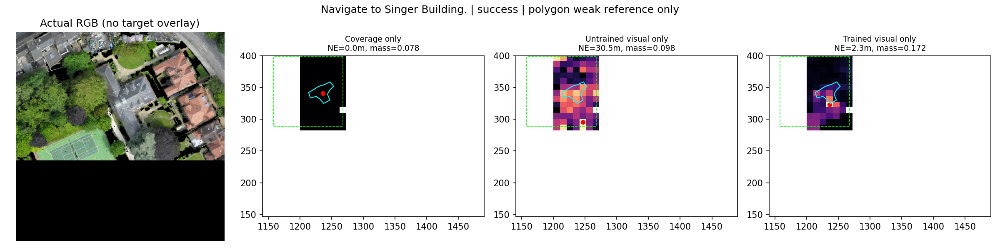
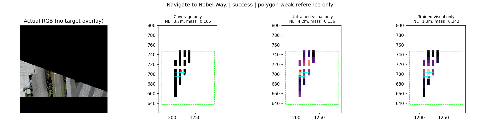
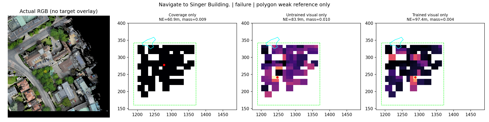
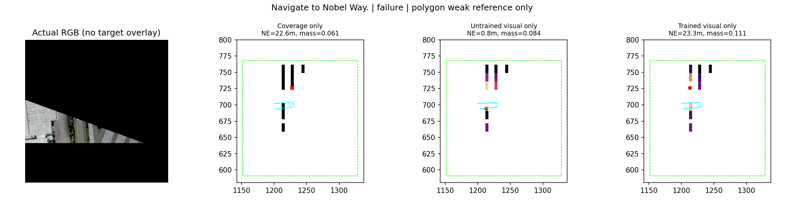
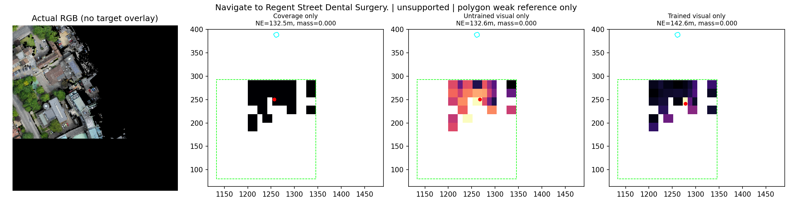
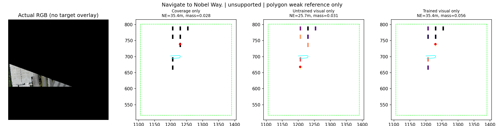
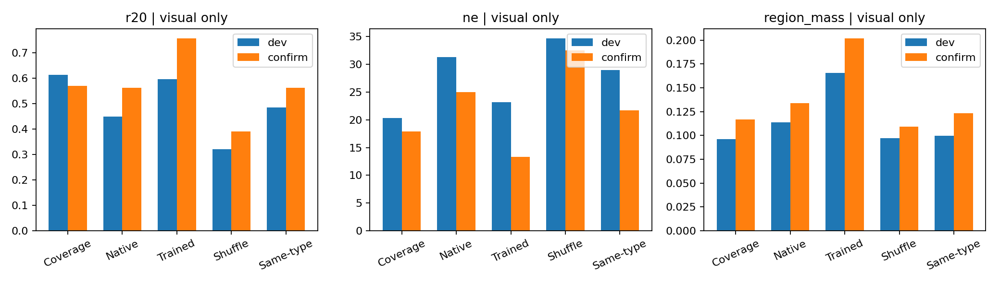

独立Visual Belief，不融合几何logits
仅TRAIN既有分区回归；真实可见性未核验，非像素GT。青色为公开Polygon事后参考，绿色为观测Footprint，红点为预测。观测域外未知。
中文报告 | 完整统计success: cambridge_block_18::singer building

原始RGBsuccess: birmingham_block_11::nobel way

原始RGBfailure: cambridge_block_18::singer building

原始RGBfailure: birmingham_block_11::nobel way

原始RGBunsupported: cambridge_block_18::regent street dental surgery

原始RGBunsupported: birmingham_block_11::nobel way

原始RGB汇总
